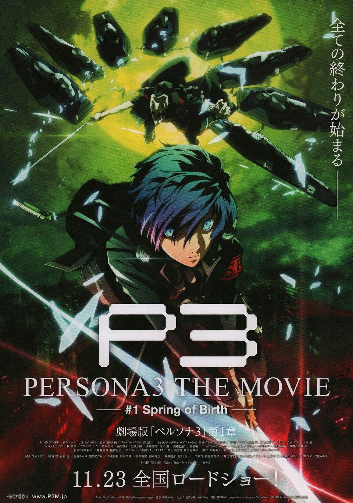
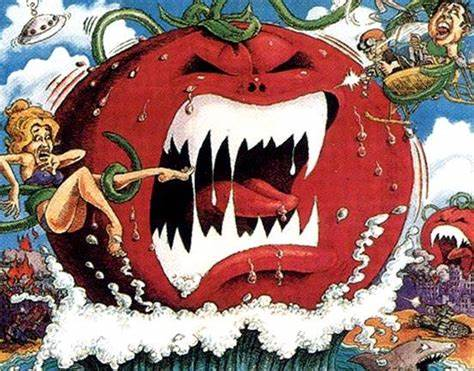

Lançamentos
Em destaque




Últimas Avaliações

Nome
Não tem nem como classificar esse filme ... é tão ruim que eu dei risada quase o filme todo. Extremamente mal feito, acho que se eu pegasse uma câmera e inventasse qualquer história ficaria muito melhor que isso. A Carla Perez deveria sentir vergonha de ter feito isso ai.
Nome
Um dos mais brilhantes filmes já feitos na história do cinema em todos os tempos. Uma emocionante história que conta com a atuação magistral grandes nomes da dramaturgia brasileira, destacando Carla Perez e Alexandre pires. Com direção impecável e um roteiro que parece inaugurar um novo estilo cinematográfico no cinema brasileiro “cinderela baiana” nos conduz a uma profunda reflexão existencial sobre o sentido da vida em sua relação profunda com a música e a dança.
Nome
O brilho inovador de Boku no Hero está na aproximação com o ocidente: apesar de se passar no Japão, o anime abraça o estilo estadunidense das histórias em quadrinhos para moldar o enredo, em um sincretismo cultural no qual o produto final funciona muito bem.Entrevistas
Filme: Mundial Fnatic
Diretor: Erick
Roteiro: Erick
Estreia: 2019
Documentário: Break Point
Diretor: Philipi
Roteiro: Philipi
Estreia: 2019
Música: Musica Tektronics
Diretor: Philipi
Roteiro: Philipi
Estreia: 2019
Novidades

“Tudo em ‘Ultimato’ foi muito especial para mim. Você quase sente como se estivesse vivendo uma
memória; você sente como se o momento já tivesse passado, então você está realmente tentando
aproveitar e apreciar como foi essa jornada. Como eu disse, em ‘Ultimato’, há ótimos momentos.
Eu amo as cenas com o Robert Downey Jr. Adoro ver a evolução desses dois personagens. Eles
geralmente dão ao Capitão América grandes discursos motivacionais e coisas assim. Qualquer uma
dessas cenas em que todos nós estamos juntos é um momento especial”.

Filme sobre a música do Legião Urbana é adiado novamente.

Ator Ryan Reynolds diz que se arrepende da participação do filme Lanterna Verde de 2011."Pode
não ter sido
a melhor experiência, mas aprendi muito".
Sobre
Criado e produzido Por Hugo Guimarães Maia, com o intuito de testar e melhorar as capacidades de desenvolvimento WEB, para isso foram utilizadas as ferramentas tecnológicas: HTML5, CSS3, JavaScript e BOOTSTRAP.Editorial
 Redação Hugo Maia
Pesquisa Raphael Lulliy
Gerente Geral Neymar Jr
Redação Hugo Maia
Pesquisa Raphael Lulliy
Gerente Geral Neymar Jr
Redes Sociais